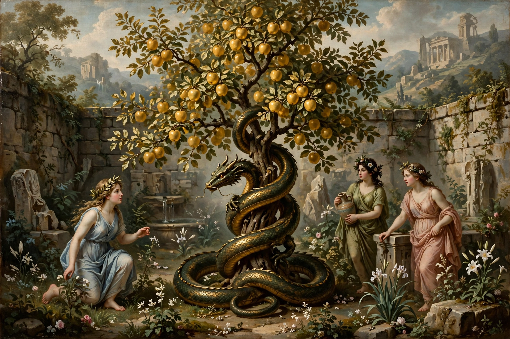

The Apples of the Hesperides are the golden fruit tree in the garden of the Hesperides in Greek mythology. The apples were said to grant immortality when eaten. The tree grew in a garden in a far-western corner of the world, variously placed by the Greeks near the Atlas Mountains in North Africa or in the distant Northern Ocean, and was cared for by the Hesperides, nymphs of the evening and golden light of sunsets.

According to one account, the tree was a wedding gift from Gaia (Earth) to Hera at her marriage to Zeus, and Hera planted it in her garden near Mount Atlas. The Hesperides — Aegle, Erytheia, and Hesperia, daughters of Atlas or of Night — tended the tree, but because they occasionally plucked the apples for themselves, Hera set the hundred-headed dragon Ladon to guard it, coiled around the trunk, never sleeping.
Fetching the apples was the eleventh of the Twelve Labours imposed on Heracles by Eurystheus. After a long journey — during which he wrestled the sea-god Nereus for directions, freed Prometheus (who advised him not to go himself), and encountered Antaeus — Heracles persuaded Atlas to retrieve the apples for him, taking the sky upon his own shoulders in the Titan's place. Atlas, hoping to be rid of his burden, offered to deliver the apples himself, but Heracles tricked him into briefly taking the sky back, then departed with the fruit. The apples were eventually returned to the garden by Athena after Eurystheus had seen them, since they could not remain in mortal hands.
The golden apples have been variously identified with oranges (unknown in ancient Greece but later associated with the myth — giving rise to the Greek word for orange groves and the botanical family name Hesperidium for citrus fruit), with quinces, or purely symbolically with the golden light of sunset in the far west.